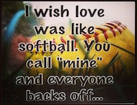
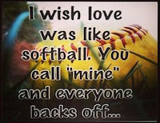

In my future I want to become a very sucessful person. An orthodontist major. I want to live a happy life. Working Hard and always being happy.

In my future I want to become a very sucessful person. An orthodontist major. I want to live a happy life. Working Hard and always being happy.
I do not have soooo many friends, but I have the best friends in the world. Although they may annoy me or put me in a bad mood, I know that they mean all good. The sad thing is that one of my closest friends doesn't go to school with me, nor do I see him. I have slowly been drifting for many reasons. But I love him (as a friend) so much and I don't know how to possibluy tell him with me not seeing him. luv ya dude <3. He's never gonna see this that why I'm writing it here. lol
I am currently going to Millikan Highschool in Quest, and are still taking Graphic Design clases. Although the career path I want to got to does not nearly involve coding or photoshop skills I still want to improve it and make it a hobby of mine. Making website are really cool and easy to make.